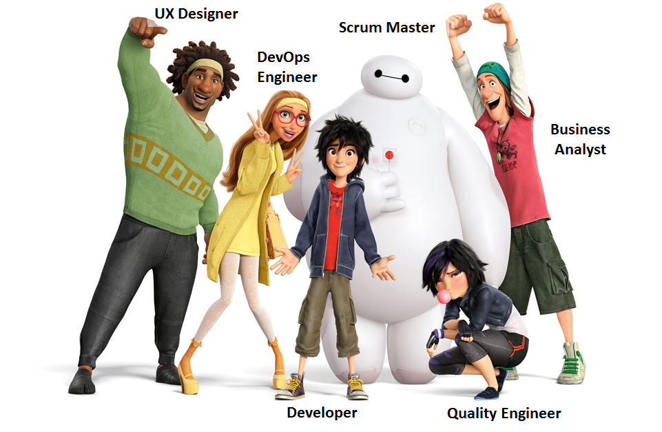

Manifesto for Agile Software Development
- Individuals and interactions over processes and tools
Manifesto for Agile Software Development
- Individuals and interactions over processes and tools
- Working software comprehensive documentation
Manifesto for Agile Software Development
- Individuals and interactions over processes and tools
- Working software comprehensive documentation
- Customer collaboration over contract negotiation
Manifesto for Agile Software Development
- Individuals and interactions over processes and tools
- Working software comprehensive documentation
- Customer collaboration over contract negotiation
- Responding to change over following a plan
Manifesto for Agile Software Development
- Individuals and interactions over processes and tools
- Working software comprehensive documentation
- Customer collaboration over contract negotiation
- Responding to change over following a plan
The most used Agile methodologies include:
- Agile Scrum Methodology
- Lean Software Development
- Kanban
- Extreme Programming (XP)
- Crystal
- Dynamic Systems Development Method (DSDM)
- Feature Driven Development (FDD)
What are the key roles in Scrum?

- Product Owner

Scrum Artifacts
- Sprint Backlog

Summary
- Scrum is rather simple. It includes not many artefacts and teams quickly realize the benefits from it.
- The centre of the development process in Scrum is a customer.
- Scrum team members work closely together towards a common goal, so their internal relations are transparent and based on trust.
- The method allows teams to feel more flexible to evolve business goals and altering requirements. Scrum teams can react as quickly as possible.
- Scrum is a transparent process that engages all stakeholders. This transparency is permanently improved thanks to daily meetings by discussing progress, planning adjustments, and delivering feedback.
Thank you for your attention!